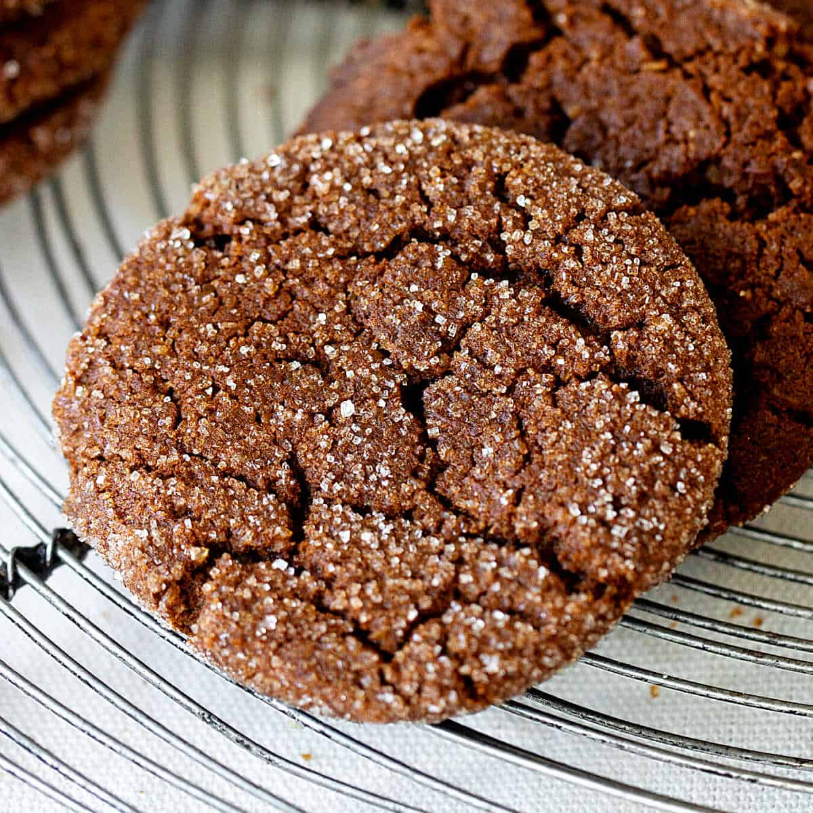

Welcome to my portfolio!
My name is Jenny, a sophomore at the University of Michigan.
Some fun facts about myself:
- I can speak fluent Vietnamese.
- I've been making art ever since I was little but got serious about improving about 7 years ago.
- My favorite cookies are Ginger Molasses, I feel like they are very underrated.
- 